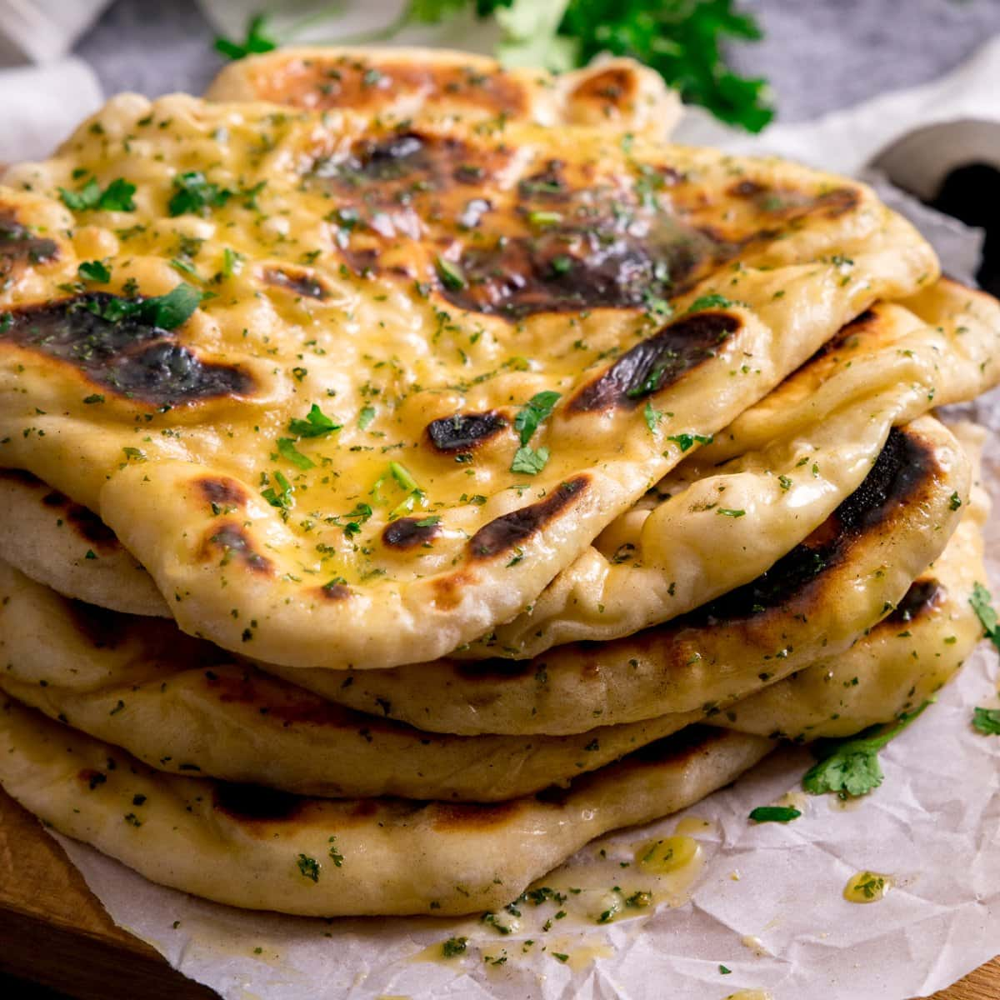

Garlic Naan

Description
This is a garlic naan recipe taken from Hebbar's Kitchen.
It is one of my favourite breads to eat shahi paneer with.
Ingredients
General ingredients:
- 2 cup maida / plain flour
- ¼ tsp baking soda
- 1 tsp baking powder
- ¾ tsp salt
- 2 tbsp oil
- ¼ cup curd / yogurt
- 1 tsp garlic, grated
- water, for kneading
For the garlic butter:
- 3 tbsp butter, melted
- 1 tsp garlic, grated
- 2 tbsp coriander, finely chopped
Steps
- firstly, in a large mixing bowl take 2 cup maida, ¼ tsp baking soda and 1 tsp baking powder and ¾ tsp salt. mix well.
- add 2 tbsp oil, ¼ cup curd and 1 tsp garlic.
- mix well making sure everything is well combined.
- further, add water as required and knead to a smooth and soft dough.
- grease the dough with oil, cover and rest for 2 hours.
- meanwhile prepare garlic butter by mixing 3 tbsp butter, 1 tsp garlic and 2 tbsp coriander.
- after 2 hours, knead the dough slightly. to remove if any air present in the dough. pinch a ball sized dough.
- gently roll to oval shape using a rolling pin. make sure you do not make too thin nor thick. and also keep the size in mind. it should not be larger than your tawa size.
- grease with water over naan. make sure you coat uniformly. this helps naan to stick on tawa.
- furthermore, slowly flip over and put it on hot tawa. remember, be gentle and put the water coated side down to tawa. also do not use nonstick tawa.
- slightly press. this helps the naan to stick on to the tawa and when you flip the tawa upside down it will be intact.
- now after a minute, flip the tawa upside down and cook naan directly on flame till they turn golden brown.
- also brush with some prepared garlic butter mixed with coriander leaves.
- gently scrape the naan from the bottom and remove.
- finally, serve garlic naan hot with your favourite curry like mattar paneer.